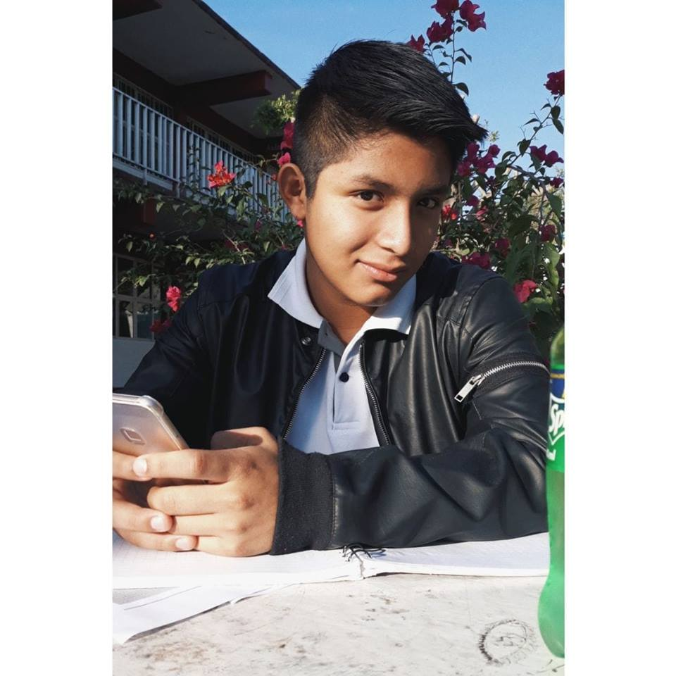

En la secundaria academicamente hablando estuve bien, tampoco era de los alumnos que resaltaba pero al menos no bajaba de un 7 pero hablando de las experiencias sociales la verdad ahi cambia la cosa puesto que he conosido a grandes amistades a raiz de la secundaria que aun siguen estando conmigo y que han demostrado ser buenos amigos. Ademas creo que esta es la etapa donde la mayoria de las personas conoce a la chica que le gusta y conmigo no fue la excepcion pero dejando todo eso de lado puedo decir que de verdad fue una de mis mejores etapas tanto socialmente como academicamente hablando
El bachillerato hasta ahora ha sido mi mejor epoca en todos los aspectos Puesto que hubo un tiempo donde iba al gym y estaba muy en forma, despues hubo otra temporada donde en el plantel de la escuela pude aprender sobre las artes marciales. Ahora hablando academicamente puedo decir que en este momento no soy de los alumnos que se dan a conoser mas sin embargo mis calificaciones no bajan de un 9 (aunque son mas 9 que 10 pero no esta mal) puedo decir que estoy completamente satisfecho con mi estilo de vida actual y pienso seguir manteniendome asi por el resto de mi estadia en el bachillerato
